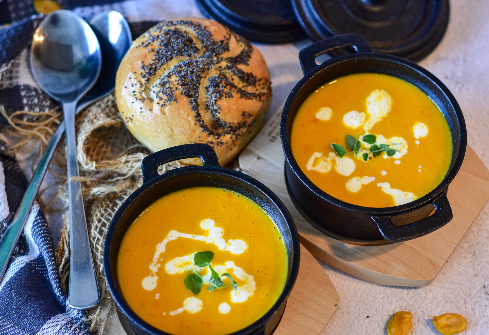

<div onclick="closeDropdown()">

    <div class="main-div">
        <h1>Kürbissuppe</h1>
        
        <div class="small-icons-parent">
            <div class="small-icons-child">
                
                <span>35 Min.</span>
            </div>
            <div class="small-icons-child">
                
                <span>einfach</span>
            </div>
            <div class="small-icons-child">
                
                <span>28.10.2022</span>
            </div>
        </div>
        <hr>
        <div class="inputDiv">
            <span>Zutaten für</span>
            <input onkeyup="resetInput()" type="number" id="myInput" placeholder="Mind. 4 Portion" value="6" min="4">
            <button onclick="calculate()">Portionen</button>
        </div>

        <table>
            <tbody id="table"></tbody>
        </table>

        <h2>Zubereitung</h2>
        <div class="small-icons-parent">
            <div class="small-icons-child d-none">
                
                <span>ca. 15 Minuten</span>
            </div>
            <div class="small-icons-child small-icons-child-extra">
                
                <span>Gesamtzeit ca. 15 Minuten</span>
            </div>
        </div>
        <ul>
            <li>Kürbis, Möhren, Ingwer und Zwiebel schälen und klein schneiden.</li> <br>
            <li>Schön in der Butter andünsten.</li> <br>
            <li>Anschließend mit der Brühe aufgießen und weich kochen (Ca 15-20min).</li> <br>
            <li>Dann sehr fein pürieren, eventuell durch ein Sieb streichen.</li> <br>
            <li>Die Kokosmilch unterrühren, mit Salz, Pfeffer abschmecken.</li> <br>
            <li>Mit Korianderblättchen garniert servieren. Und Fertig!</li> <br>
        </ul>
        <h3>Rezept erstellt von: </h3>
        <div class="author">
             <b> Alina Wetter</b>
        </div>
    </div>

</div>